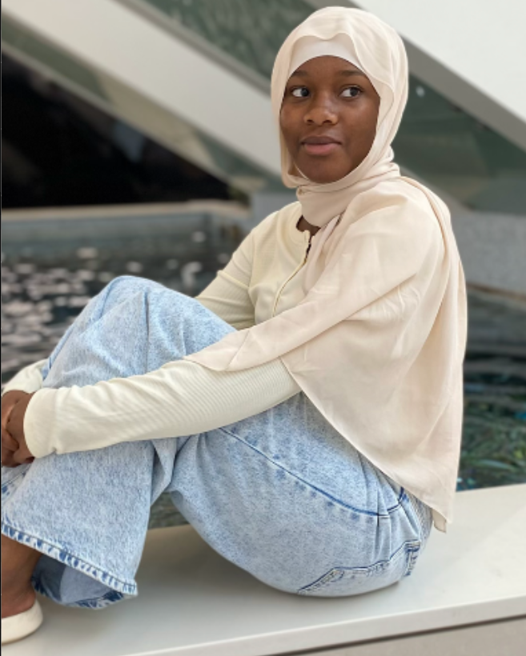

“I tell young people: Do not think of yourself, think of others. Think of the future that awaits you, think about what you can do and do not fear anything.”
- Rita Levi-Montalcini
Hi, I'm Hawa and I'm a first-year Psychology major at UNC-Chapel Hill from Philadelphia, Pennsylvania. I'm interested in how psychology plays a role in medicine and directly impacts patient care.
